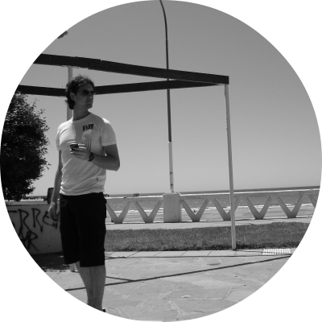

I earned my Licentiate degree in Physics in 2008 and my PhD in
Physics in 2013, both from the National University of Rosario
(UNR, Argentina).
From 2013 to 2015, I worked at the La Plata Astrophysics
Institute (IALP),
under a
CONICET postdoctoral fellowship.
In 2016, I was appointed as a full-time Researcher at IALP.
Since 2024, I have been based at the
Rosario Physics Institute (IFIR), where I work to this day.
My research focuses on
stellar
clusters, and the development of Python-based astrophysical software.
[ SciX | Github | Google Scholar | arXiv | ORCID ]